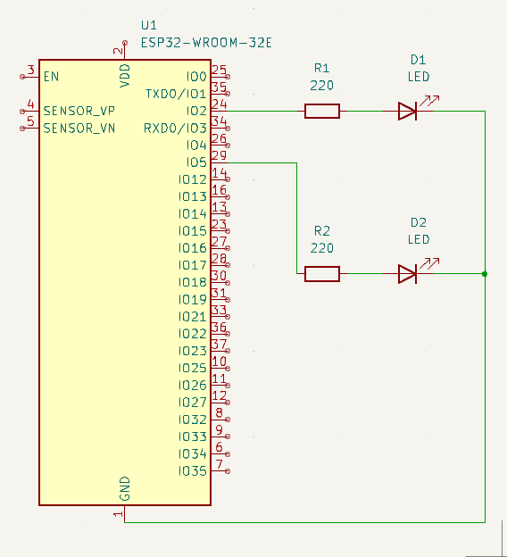

Utilisation de MicroPython

Pour comprendre : principe général de l'utilisation de MicroPython
Le principe général est le suivant :
- on connecte la carte avec Micropython sur le port USB : un port série lui est attribué : /dev/ttyACM0 par exemple sous Gnu/Linux
- avec un interpréteur comme Thonny, on peut envoyer le code dans la carte.
Préparer le matériel pour MicroPython
source : https://www.aranacorp.com/fr/programmez-un-esp32-avec-micropython/
Les cartes Arduino et les cartes type ESP32/ESP8266, ont un firmware (mini-OS) permettant de charger du code depuis l'IDE de Arduino.
Nous devons modifier ce firmware pour fonctionner en MicroPython.
Prérequis :
-
Installer Python 3
-
(facultatif) Installer les esptool :
pip install esptool -
Installer Thonny IDE (sous Linux version flatpak + récente )
- Sous Linux :
sudo usermod -a -G dialout your-username
- Sous Linux :
-
(seulement sous Windows, installer les drivers CP210x Windows Drivers : https://www.silabs.com/developers/usb-to-uart-bridge-vcp-drivers?tab=downloads )
Nous allons flasher le firmware MicroPython avec Thonny IDE.
La méthode la plus simple pour installer et utiliser MicroPython sur ESP32 (et autre microcontrôleur) est d’utiliser le logiciel Thonny IDE. En effet vous pouvez installer le firmware à partir de l’interface du logiciel et l’utiliser pour développer votre code et le téléverser sur la carte.
Dans le logiciel, Thonny IDE, sélectionner le Menu : Exécuter puis Configurer l'interpréteur...

Cliquer sur Installer ou mettre à jour MicroPython (esptool.)

Sélectionner le bon port. Pour une carte Carte Espressif ESP32-WROOM-32E :
- MicroPython family : ESP32
- Variant : Espressif ESP32 / VROOM
Puis instaler, le firmware va se charger dans la carte.

Téléverser un programme
Dans le logiciel, Thony IDE, sélectionner le Menu : Exécuter puis Configurer l'interpréteur...
Choisir le bon port (exemple : /dev/ttyUSB0 ou /dev/ttyACM0 )

Programme test
from machine import Pin
import time
pin_led1 = Pin(2, mode=Pin.OUT)
pin_led2 = Pin(5, mode=Pin.OUT)
while True:
pin_led1.on()
time.sleep(1)
pin_led1.off()
time.sleep(1)
pin_led2.on()
time.sleep(1)
pin_led2.off()
time.sleep(1)

Réaliser ce montage :

Remettre le matériel pour Arduino IDE
Dans le logiciel, Arduino IDE, sélectionner le Menu : Tools puis Board -> esp32 -> ESP32 Dev Module

Dans le Menu : Tools puis Programmer, sélectionner Esptool
Dans le Menu : Tools puis Burn Bootloader

Programme test
void setup() {
pinMode(2, OUTPUT);
pinMode(5, OUTPUT);
}
void loop() {
digitalWrite(2, HIGH);
delay(100);
digitalWrite(2, LOW);
delay(100);
digitalWrite(5, HIGH);
delay(100);
digitalWrite(5, LOW);
delay(100);
}